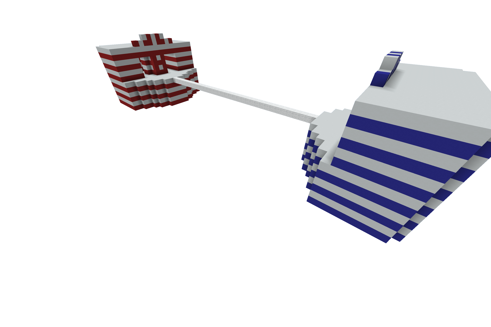
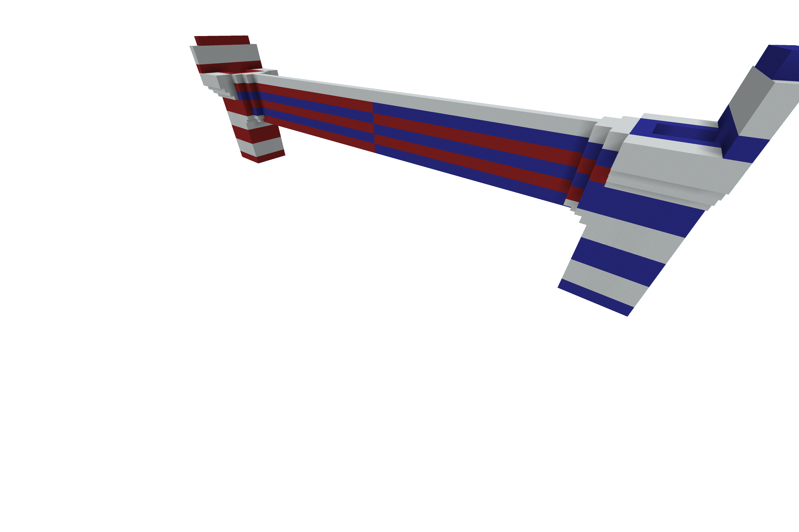
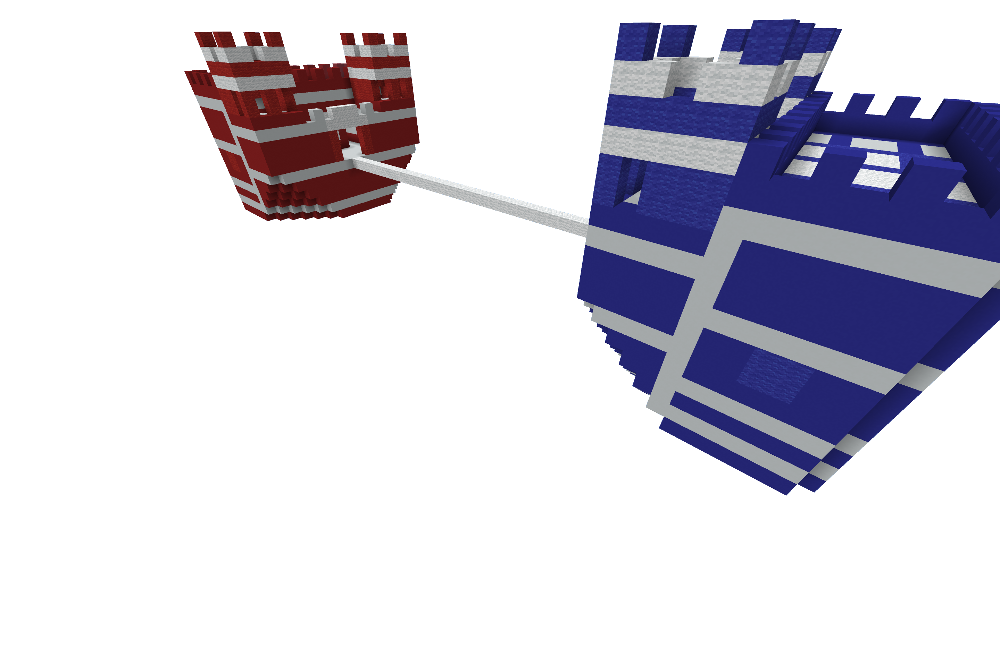
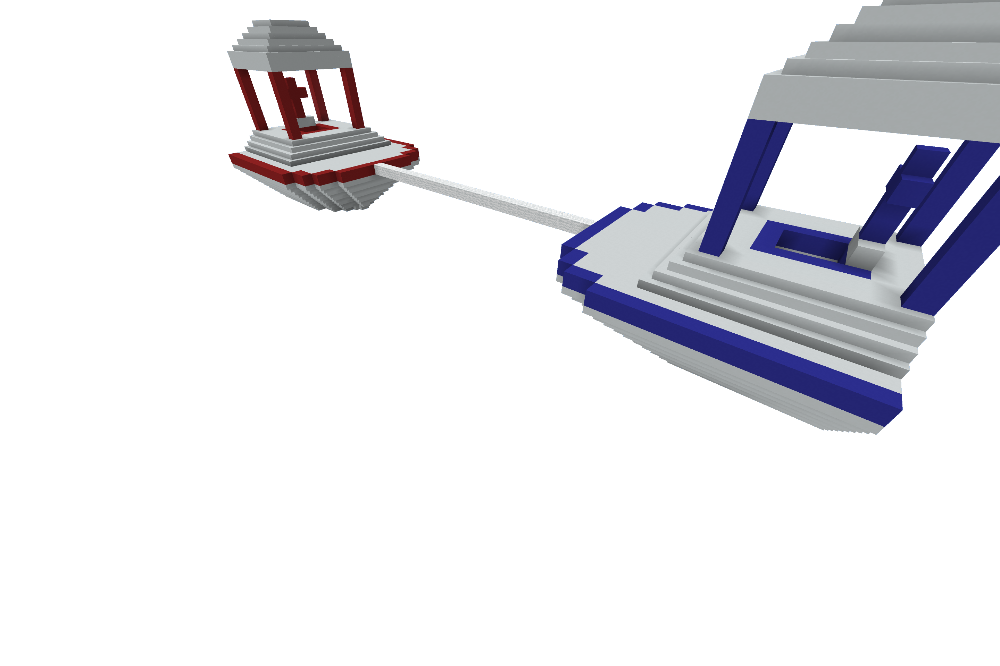
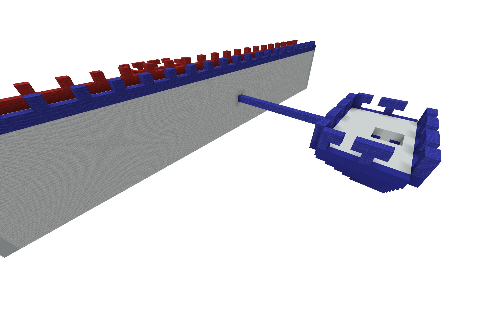
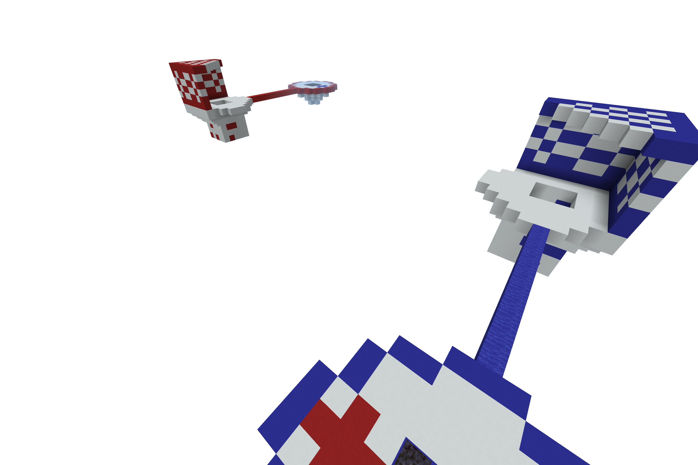
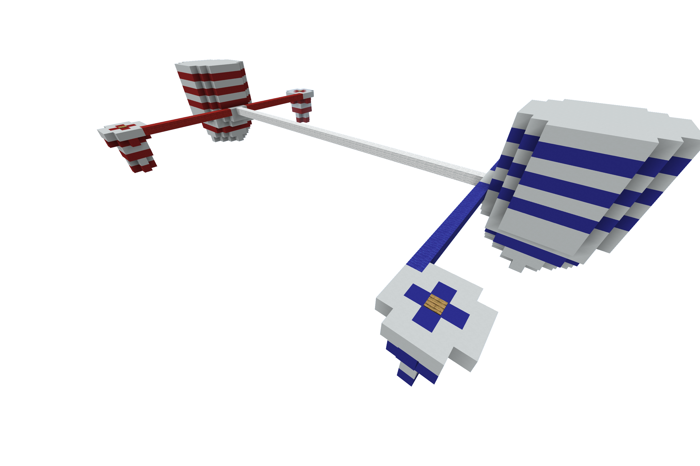
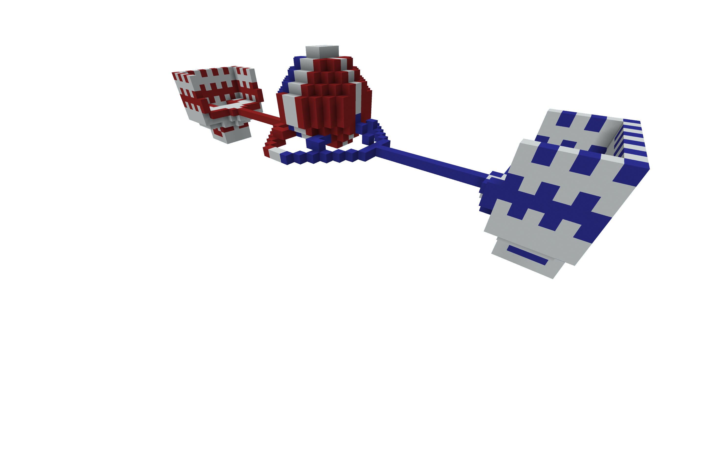

Fight your opponent. Cross the bridge. Capture the hole!
Fight your opponent to be the first one into the other team's hole!
Minimum Players: 2
Points: 1 for the winning team
Idea: Hugo
Code: Corban
Head of Map Design: Corban
Each player gets:
Upon entering the opposing team's hole, the round ends
and your team is awarded one point.
Entering your own hole kills you.
This map has a roundabout way of attacking the hole. The hole is against a wall facing the bridge, so players must go around to reach it.

This map has the bridge and the islands scaled upwards, so bridging on sides is allowed.

This map is focused on strategy, with two archer towers and many sneaky entries that you can find yourself.

Temple, grave, whatever. A simple map with an open hole and a roof-based secret.

Relive attacking guarded walls in this map! Dig your way through or climb up, your choice!

This map has the bridge going laterally, with a portal at the corners of the map.

In this map, the map was meant to slowly return to its original state, however, the requirements made this too laggy.
In this map, each team's hole is protected by two conduits. Stand on both the opposing team's pressure plates to access the hole.

A reactor in the middle randomly blows up and resets the nearby map!
